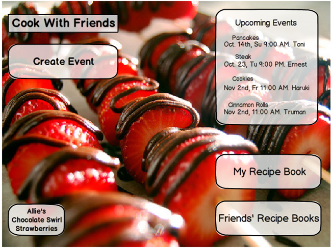
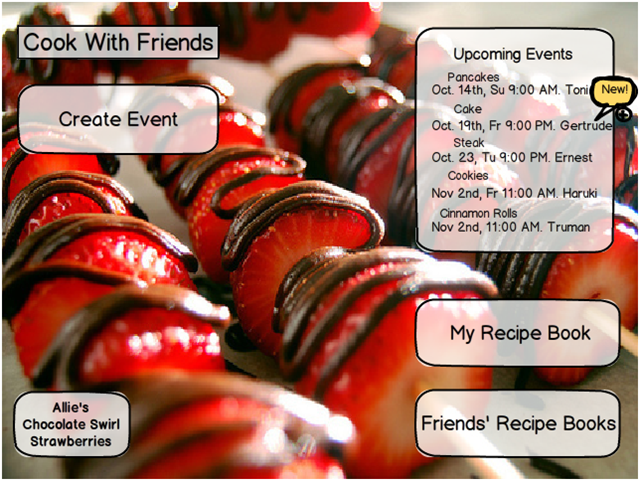

Fallera - Social Cooking
Human Factors Interface Design, Fall 2012

The main page (shown below) allows the user to see what events are occurring soon via the timeline. The user can also access his or her recipe book and friends' recipe books from this page, in addition to creating a new event. The background of the page rotates between images from friends' recipe books, and the button in the lower left takes the user to the full recipe in a friend's recipe book. The center of the app is left open in order to allow the user to enjoy the image of delicious food.
When a user receives an invitation to a new event or creates a new event, he or she receives a notification on the timeline. The user also receives notifications if events are updated.
